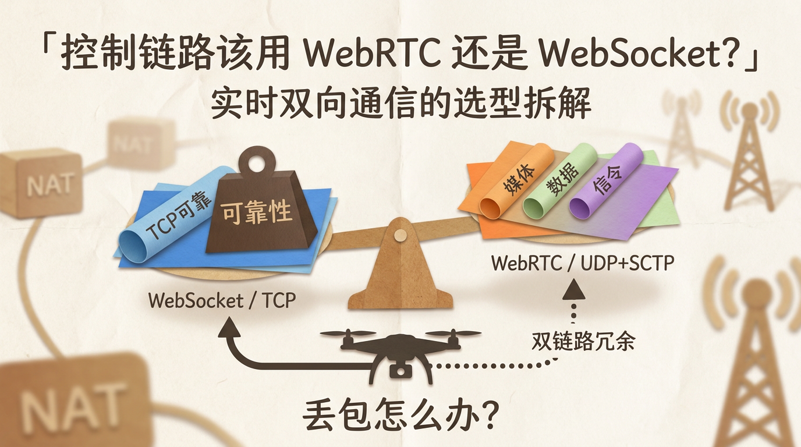
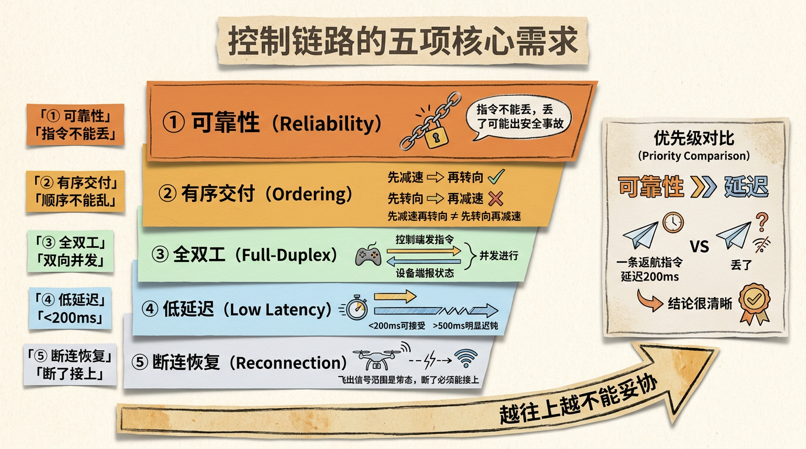
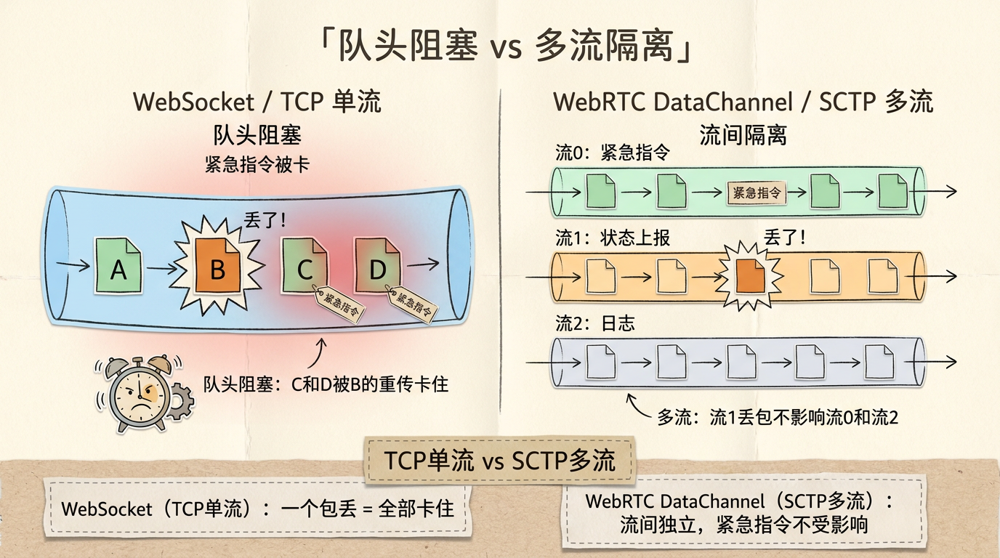
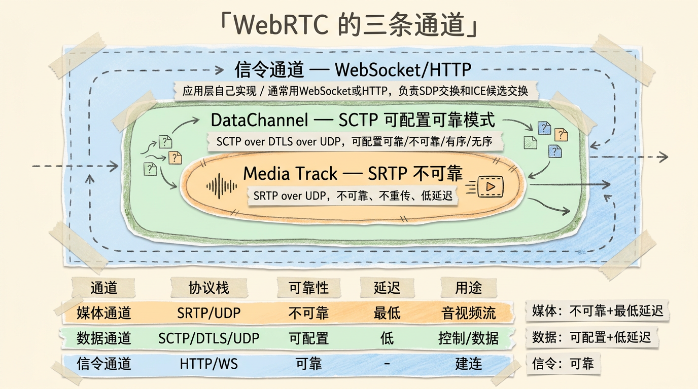
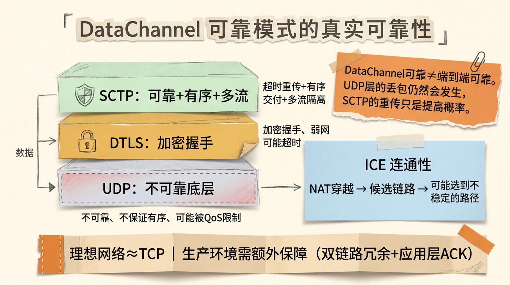
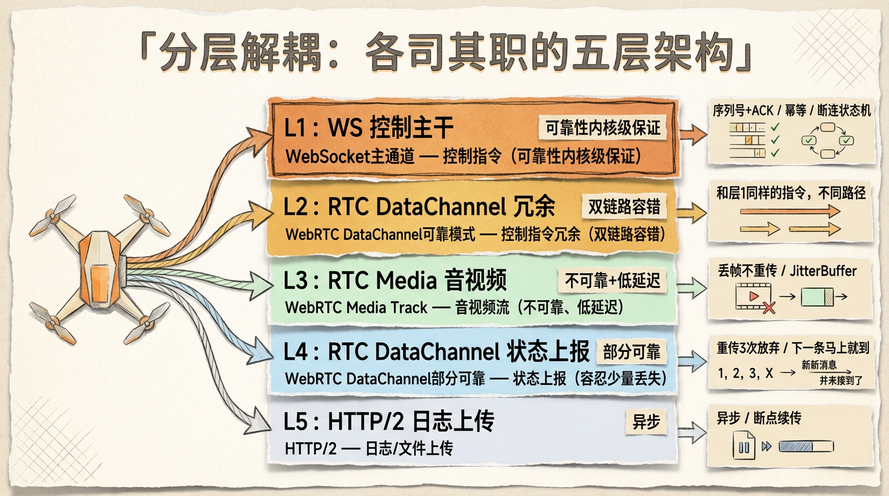
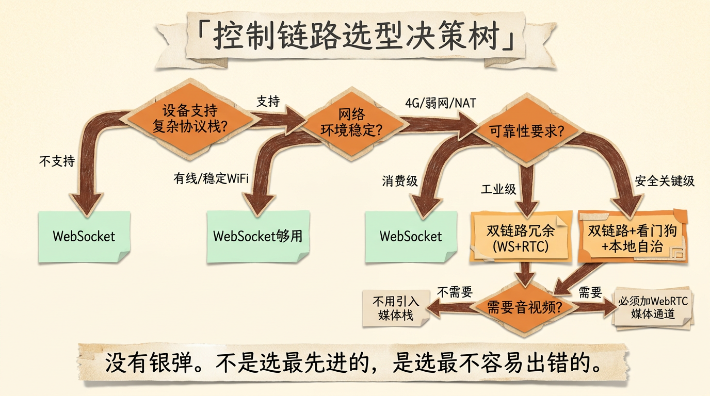

控制链路到底该用WebRTC还是WebSocket？——实时双向通信的选型拆解
几年前我做无人机远程操控系统的时候，遇到过一个至今记忆犹新的架构决策：无人机和地面站之间的控制链路，用 WebRTC 还是 WebSocket？
当时的直觉是”WebRTC 延迟低”，但团队里一个资深工程师反问了一句：”WebRTC 可能丢包，控制链路用它，你不怕无人机收不到返航指令？”
这个问题问得好。它指向一个很多人没想清楚的问题：实时通信的”低延迟”和控制链路的”高可靠”不是一回事。你选错协议，要么延迟超标（体验差），要么丢包失控（安全性事故）。
这篇文章把 WebRTC 和 WebSocket 在控制链路场景下的技术取舍从头拆一遍。读完你会知道，为什么”控制链路用 WebRTC”是个需要大量附加设计才能成立的选项。

先定义清楚：控制链路到底需要什么
讨论协议选型之前，先得明确”控制链路”对传输层的核心要求：
可靠性 > 延迟。一条”返航”指令如果丢了，比延迟 200ms 严重得多。无人机可能飞丢，机械臂可能撞墙，车门可能没锁上。控制链路的可靠性不是”最好有”，是”必须有”。
有序交付。指令序列必须按发送顺序执行。”先减速、再转向”和”先转向、再减速”是完全不同的两个动作。这一点看起来理所当然，但 WebRTC DataChannel 的默认模式偏偏不保证有序。
双向通信。控制端下发指令，设备端上报状态。这不是”一问一答”的请求-响应模式，而是持续的、并发的双向消息流。这对协议的全双工能力有硬性要求。
低延迟。虽然不是第一优先级，但延迟也不能太差。200ms 以内的端到端延迟是可接受的，超过 500ms 操作员会明显感到”迟钝”。
断连恢复。控制链路不可能永远不断。无人机飞出信号范围、机械臂进入屏蔽车间、车机进入地下车库——断连是常态。协议层和应用层必须合力解决”断了之后怎么接上、状态怎么恢复”。
这五条翻译成工程语言就是：需要一条可靠的、有序的、全双工的、低延迟的、可恢复的通信通道。
好了，现在看看 WebSocket 和 WebRTC 各自给了你什么。

WebSocket：一条可靠的管道，但不够
WebSocket 是建立在 TCP 之上的全双工协议。一次 HTTP Upgrade 握手之后，客户端和服务端之间就建立了一条持久化的双向消息通道。
WebSocket 天然满足控制链路的前三个需求：
- 可靠性：TCP 保证数据不丢、不错、不重。ACK 机制、超时重传、流量控制都在传输层搞定了。应用层不需要自己写重传逻辑。
- 有序交付：TCP 是有序字节流。你先
send("减速")再send("转向")，对端一定先收到”减速”再收到”转向”。 - 全双工：WebSocket 天然双工。控制端和设备端可以同时互发消息，不需要轮询。
那 WebSocket 差在哪？延迟。
TCP 的可靠性是有代价的。丢了一个包，整个后续的字节流都会被阻塞，直到这个包被重传成功。这叫队头阻塞（Head-of-Line Blocking）。
在控制链路的场景下，队头阻塞意味着：如果一条”查询状态”的消息因为某个丢包被卡住，后面那条紧急的”立即悬停”指令也会被卡住。TCP 不知道你的消息有优先级之分——对它来说，所有字节都是平等的。
另外，WebSocket 建连需要 TCP 三次握手 + HTTP Upgrade，在弱网环境（无人机飞出信号范围再飞回来）下，每次重连都要重新走一遍握手机制。频繁断连重连场景下，这个开销不小。
而且 WebSocket 还有一个容易被忽略的问题：它在移动网络切换时的表现很差。手机从 WiFi 切到 4G，TCP 连接就断了，WebSocket 必须重连。WebRTC 基于 UDP，可以更快地适应网络切换。

WebRTC：低延迟的代价
WebRTC 最初是为浏览器间的音视频通话设计的。它的核心目标是尽可能低的延迟，为此做了一系列激进的取舍。
WebRTC 的传输层基于 UDP。UDP 不保证可靠、不保证有序、不保证不重复。它就是一个”尽力而为”的数据报服务。这对音视频来说恰到好处——丢几帧画面用户注意不到，但延迟高 200ms 用户立刻感知。
WebRTC 有三条通道：
- 媒体通道（Media Track）：传音视频流。基于 SRTP（安全实时传输协议），不重传，丢帧就丢了。
- 数据通道（DataChannel）：传任意二进制数据。基于 SCTP（流控制传输协议），可以配置为可靠模式或不可靠模式。
- 信令通道（Signaling Channel）：WebRTC 自己不管信令。建连的 SDP 交换要靠应用层自己实现（通常用 WebSocket 或 HTTP）。
关键就在这个 DataChannel。SCTP 本身支持可配置的可靠性：
- 可靠有序模式（Reliable + Ordered）：等价于 TCP 的语义，保证不丢包且有序。代价是队头阻塞。
- 可靠无序模式（Reliable + Unordered）：不丢包但不保证顺序。先到的先交付。
- 部分可靠模式（Partial Reliability）：允许限制重传次数或重传时间。超限就放弃这个包，不阻塞后续。
所以答案是：WebRTC DataChannel 可以配置成”可靠有序”模式。
这样它就同时拥有了 WebSocket 的可靠性和 WebRTC 的低延迟优势了吗？没那么简单。

关键分叉：DataChannel 的可靠模式到底靠不靠谱
DataChannel 配置为可靠有序模式后，底层的 SCTP 会做超时重传和有序交付。这个行为和 TCP 非常相似。
但 SCTP 和 TCP 有几个工程上的关键区别：
多流（Multi-Streaming）：这是 SCTP 最大的优势。TCP 是单流的——一个字节流里所有数据共享同一个序列号空间。丢了一个包，后面所有数据都被阻塞。SCTP 支持多条独立的逻辑流，每条流有自己的序列号和重传机制。一条流的丢包不影响其他流。
这对控制链路太重要了。你可以把”紧急指令”放在流 0（高优先级），”状态上报”放在流 1（低优先级），”日志上传”放在流 2（最低优先级）。流 1 丢包只会阻塞流 1 内的后续数据，流 0 的紧急指令畅通无阻。
更好的拥塞控制：SCTP 的拥塞控制算法比传统 TCP 更现代，对弱网环境的适应性更好。具体来说，SCTP 不会像 TCP 那样”一有丢包就砍半发送窗口”——它有更精细的拥塞信号处理。
但问题是：DataChannel 的可靠模式配置了，就一定可靠吗？
不完全是。WebRTC DataChannel 底层有两层传输：SCTP over DTLS over UDP。每一层都可能引入不稳定性。
- DTLS 握手：DataChannel 建连前必须先完成 DTLS 握手。这个握手在弱网下可能超时。
- ICE 连通性：WebRTC 的建连依赖 ICE（交互式连接建立）来穿越 NAT。在复杂的网络环境下（比如无人机用的是 4G 专网 + VPN），ICE 可能选到一条不稳定的链路。
- UDP 层的不确定性：即使 SCTP 层保证了可靠，UDP 层仍然可能被运营商的 QoS 策略限速甚至丢弃。有些网络环境里，UDP 流量被严重限制。
所以结论是：DataChannel 可靠模式在理想网络条件下可以媲美 TCP 的可靠性。但在复杂生产环境（弱网、NAT、QoS 限制）下，需要额外的工程保障。

正确的做法：分层解耦，各司其职
看了上面的分析，你可能觉得”两个都不完美”。的确。正确的做法不是二选一，而是分层解耦——让不同特性的数据传输走不同的通道：
1 | 控制指令（紧急、短小、必须可靠）：WebSocket 主通道 + 应用层 ACK |
这个分层架构的核心逻辑是：
**WebSocket 作为”控制主干”**：所有关键控制指令走 WebSocket。因为 WebSocket 基于 TCP，它的可靠性是内核级保证的，不需要应用层额外写 ACK/重传。简单、可靠、好调试。
**WebRTC DataChannel 作为”控制冗余”**：同样的紧急指令，同时通过 WebRTC DataChannel（可靠模式）再发一遍。两条通道同时失效的概率极低。这是航空航天领域的常见做法——“双链路冗余”。
WebRTC 媒体通道用于音视频：FPS 视频流不需要可靠传输，丢几帧不影响飞行安全，但延迟必须低。这是 WebRTC 最擅长的场景。
状态上报走部分可靠模式：无人机每秒上报几十次 GPS 位置、电量、姿态。丢了一两条上报没关系（下一条马上就到），但每条都走可靠重传反而会加重网络负担。
控制指令的应用层设计：
在 WebSocket 主通道上，还需要应用层的可靠性增强：
序列号 + ACK：每条控制指令带一个单调递增的序列号。设备端收到后回复 ACK。控制端发出指令后启动定时器，超时未收到 ACK 就重发。这是对 TCP 可靠性的二次确认——TCP 的 ACK 只保证数据到了内核缓冲区，不保证应用层处理成功。
幂等设计：所有控制指令必须是幂等的。”起飞”指令发两次，无人机不能起飞两次——第二次应该识别出”已经起飞”并回复”已在空中”。这是分布式系统的通用原则，在控制链路场景更加关键。
断连状态机：设备端维护一个简单的状态机。连接正常 → 检测到断连（心跳超时）→ 进入安全模式（悬停/缓慢减速）→ 尝试重连（指数退避）→ 重连成功 → 状态同步（拉取当前飞行状态）→ 恢复正常。

选型决策树
总结一下，面对一个具体的控制链路需求，按这个流程做决策：
1. 你的设备支持什么？
- 如果设备端只有嵌入式系统，资源有限 → WebSocket。WebRTC 的协议栈很重，Pion（Go 的 WebRTC 实现）编译完 binary 大 20MB+。
- 如果设备端性能充裕 → 两个都上，分层冗余。
2. 你的网络环境是什么？
- 有线局域网 / 稳定的 WiFi → WebSocket 足够。TCP 的队头阻塞在低丢包率场景不明显。
- 4G/5G移动网络、弱网、NAT穿越需求 → WebRTC 有优势（UDP + ICE + 多流）。
- 卫星通信（高延迟、高丢包）→ WebSocket 可能会因为 TCP 重传超时而严重卡顿。考虑 WebRTC DataChannel 部分可靠模式 + 应用层补偿。
3. 你的可靠性要求有多高？
- 消费级（遥控玩具、智能家居）→ WebSocket 单体通道足够，断连后自动重连即可。
- 工业级（无人机、机械臂、自动驾驶）→ 双链路冗余（WebSocket + WebRTC DataChannel）+ 应用层 ACK + 幂等设计。
- 安全关键级（医疗设备、航空）→ 双链路冗余 + 硬件看门狗 + 本地自治（设备端在断连时能自主安全停机）。
4. 你需要传音视频吗？
- 如果需要 → WebRTC 媒体通道是唯一靠谱的选择。不要在 WebSocket 上传 H.264 帧。
- 如果不需要 → WebSocket + WebRTC DataChannel 就够了，不用引入 WebRTC 媒体栈的复杂度。

写在最后
回到开头的那个问题：控制链路用 WebRTC 还是 WebSocket？
答案是：没有银弹。WebSocket 给你简单的可靠，WebRTC 给你灵活的延迟控制。正确的做法不是站队，而是理解各自的边界——可靠性交给 TCP/WebSocket，低延迟交给 UDP/WebRTC，关键指令走双链路冗余。
很多人做架构选型的时候，习惯按”哪个技术更先进”来判断。但控制链路的选型逻辑刚好反着来：不是选最先进的，是选最不容易出错的。 在”可靠性”这个维度上，简单就是竞争力。TCP 打磨了 40 年，它的可靠性是几十亿设备验证过的。WebRTC DataChannel 的可靠模式虽然理论上不逊色，但在复杂的生产环境里，多一层 UDP 就多一个变量。
下次有人跟你说”WebRTC 延迟低所以控制链路用 WebRTC”，你可以问他：丢包怎么办？
以上，既然看到这里了，如果觉得不错，随手点个赞、在看、转发三连吧，如果想第一时间收到推送，也可以给我个星标⭐~
谢谢你看我的文章，我们，下次再见。
/ 参考资料
WebRTC: Real-Time Communication in Browsers (W3C, 2021)
SCTP: Stream Control Transmission Protocol (RFC 4960 / RFC 9260)
Datagram Transport Layer Security (RFC 6347 / RFC 9147)
Interactive Connectivity Establishment (RFC 8445)
The WebSocket Protocol (RFC 6455)
Pion: A Go implementation of WebRTC (github.com/pion/webrtc)
TCP Congestion Control (RFC 5681)